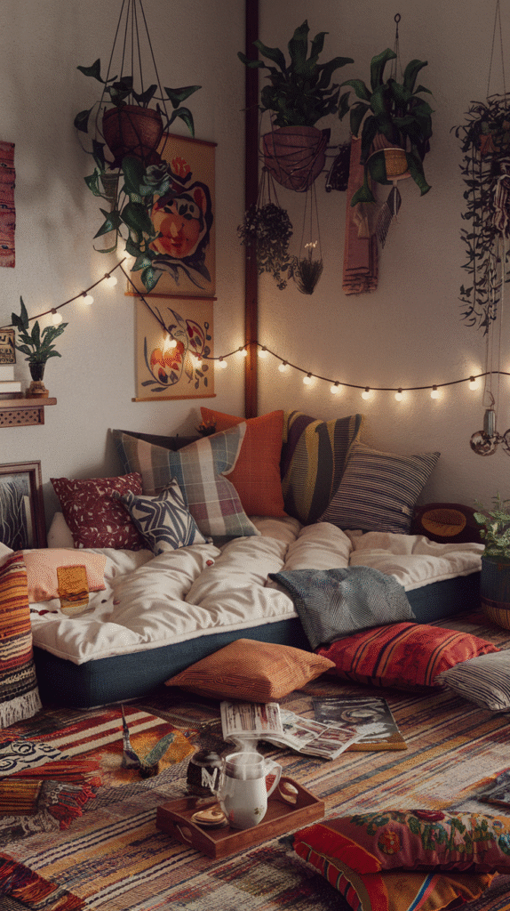
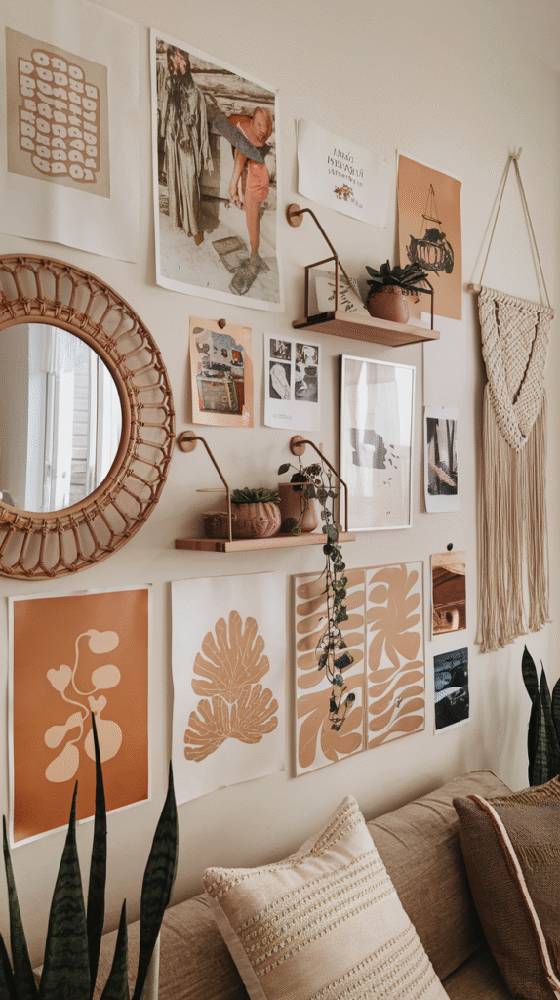
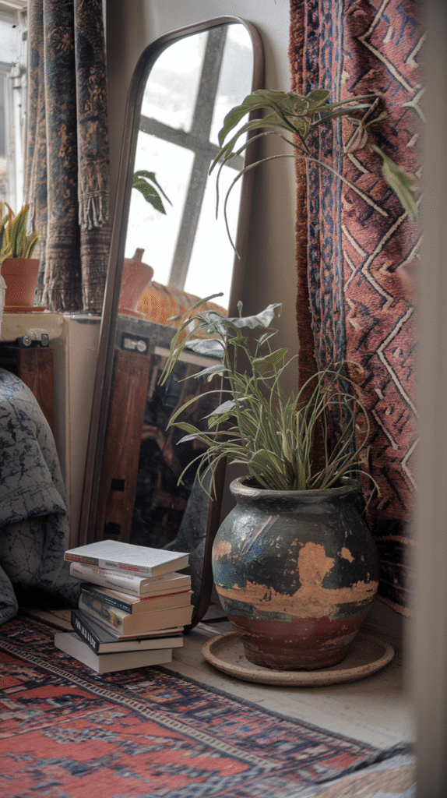
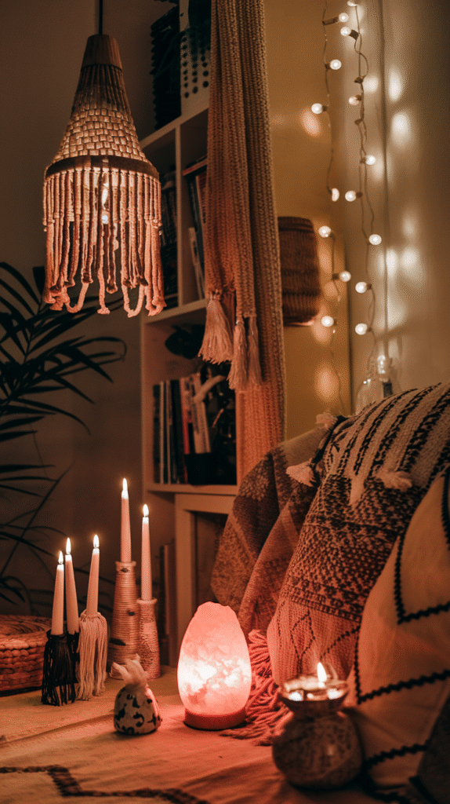
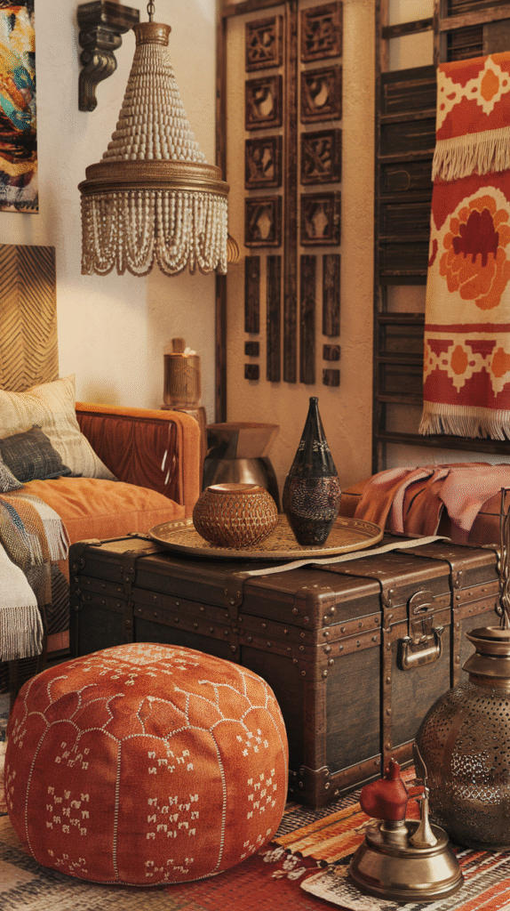
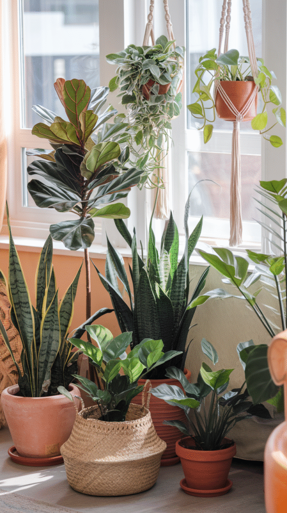
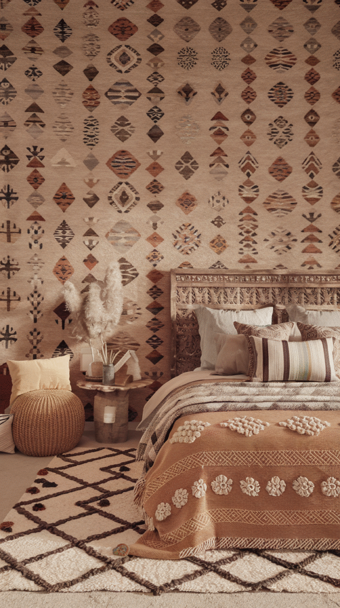
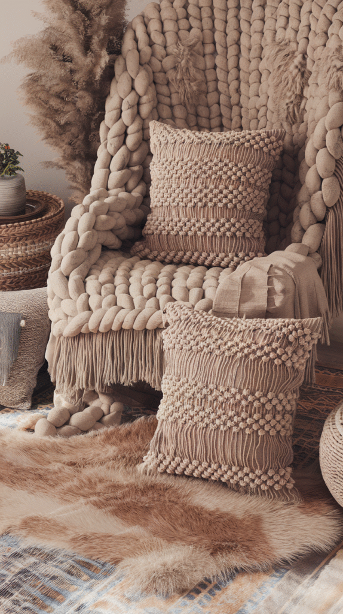
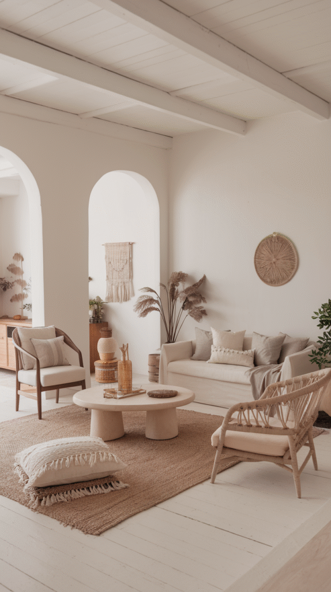
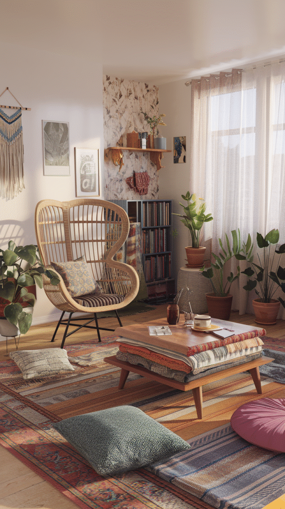

Styling one boho room is one thing.
Carrying that look convincingly across a whole apartment is another.
Without a consistent set of underlying principles, a boho apartment can end up feeling like a different style in every room instead of one cohesive home.
Here are those principles. Not a room-by-room shopping list.

1. Make Cozy the Goal in Every Room
Whatever the specific styling choices in each room, the end feeling should be the same throughout: warm, relaxed, inviting.
This final check is a useful filter for any individual decision. Does this choice make the room feel more like the rest of the apartment, or does it stand apart from it?

2. Give Your Wall Decor a Through-Line
Art and wall decor chosen with some connecting thread, a recurring material, a consistent frame approach, reads as curated across multiple rooms rather than randomly assembled room by room.
This doesn't mean identical choices everywhere, just a loose consistency a visitor would notice without being able to immediately name.

3. Let Imperfection Be Consistent, Not Selective
A single perfectly curated room next to several untouched ones breaks the whole-apartment feeling faster than imperfection itself ever would.
Applying the same tolerance for worn, mismatched, or slightly imperfect pieces throughout, rather than concentrating polish in one showcase room, is what makes the whole apartment feel intentional.

4. Light Every Room Warmly
Warm-toned lighting, layered rather than relying on a single overhead fixture, matters in every room of a boho apartment, not just the one with the most styling attention.
This is one of the easiest things to carry consistently through a rental, since it requires only bulbs and fixtures, not structural changes.

5. Collect Global and Vintage Pieces Over Time
An apartment furnished all at once from a single source rarely achieves the collected feeling boho depends on. Pieces gathered gradually, from different places and times, read as more genuine.
This is less about speed and more about resisting the urge to furnish every room in one trip.

6. Put Plants Throughout, Not Just One Room
Greenery carried through the kitchen, living room, and bedroom alike does more for whole-apartment cohesion than a single impressive plant collection in just one spot.
This also solves a genuine apartment-living problem. Most rental spaces benefit from the life plants add to otherwise sparse corners.

7. Let Patterns Repeat With Variation
A recurring color or motif, varied slightly from room to room, ties the apartment together the way an identical pattern everywhere wouldn't.
This is a more sophisticated approach than matching every room exactly, and it still reads as clearly intentional.

8. Treat Texture as a System, Not a One-Off
Texture shouldn't just show up in one statement room. A consistent logic of woven, soft, and natural materials carried through every space is what makes the whole apartment read as boho, not just one accent wall.
This is more achievable in a rental than structural changes, since texture comes from rugs, textiles, and furniture rather than anything permanent.

9. Start Every Room From the Same Neutral Base
A consistent neutral wall and larger-furniture palette across the whole apartment is what lets each room feel part of the same home, even with very different accent choices.
This is especially useful in a rental, where wall color often can't change room to room. The neutral base becomes the unifying thread instead.

10. Understand What Boho Actually Means
Boho isn't a fixed look so much as a set of values: collected over curated, global over generic, imperfect over flawless.
Understanding it as a philosophy rather than a checklist makes it much easier to apply consistently across different rooms with different functions.

Your Boho Apartment, Your Rules
None of these principles require finishing every room before the apartment feels cohesive.
Start with the neutral base and lighting, since both carry through every room most easily, then build texture, pattern, and collected pieces over time.
A boho apartment works when the principles stay consistent, even as the specific pieces in each room differ.